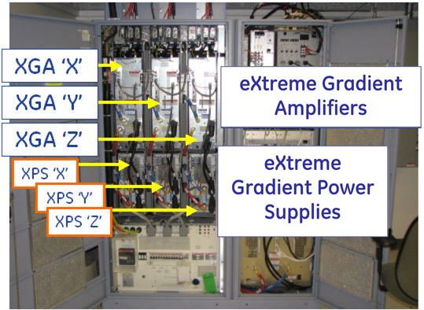
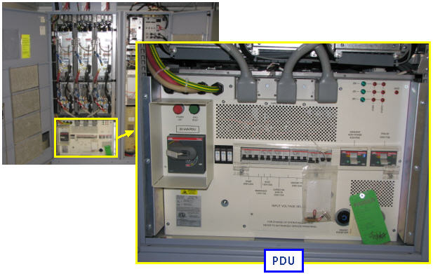
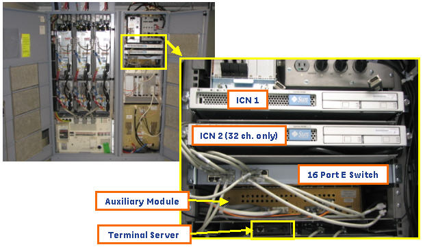
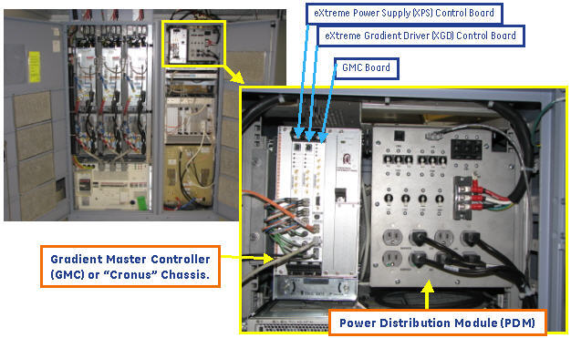

Operating Documentation
Direction 5670000, Rev# 1
Optima MR450w 1.5T Service Methods
Module Version 4.0, Version Date 5/15/09
Operating Documentation |
This document provides component locations for the PGR Cabinet. The PGR Cabinet includes the contents of the System, RF, and Gradient cabinets from previous systems.
This illustration shows the PGR cabinet with the doors closed and opened.
Illustration 1: PGR Cabinet
This section provides a high level presentation of the contents of the new PGR cabinet.
Illustration 2: PGR Cabinet Contents
This section shows the location of the gradient amplifiers and power supplies.
Illustration 3: XGD Contents

This section shows the location of the PDU.
Illustration 4: PDU Location

This section shows the location of the CAM and its associated boards.
Illustration 5: CAM Location
This section shows the location of the Recon and Comm boards.
Illustration 6: Recon, Comm Location

This section shows the location of the Gradient Master Control or “Cronus” chassis and the PDM.
Illustration 7: Cronus and PDM Location

This section illustrates the cable and panel views, located on top of the cabinet.
Illustration 8: PGR Cabinet connections